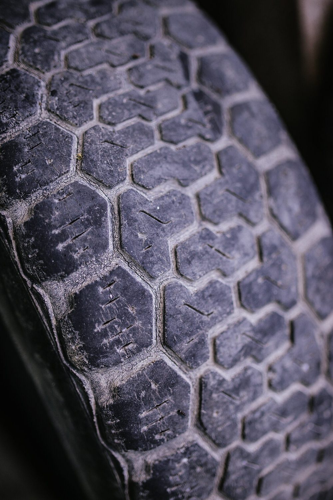
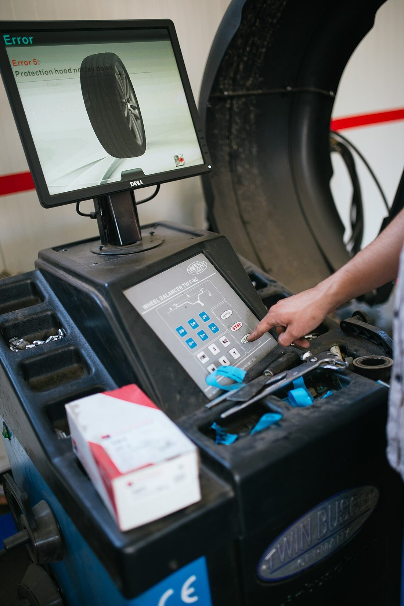
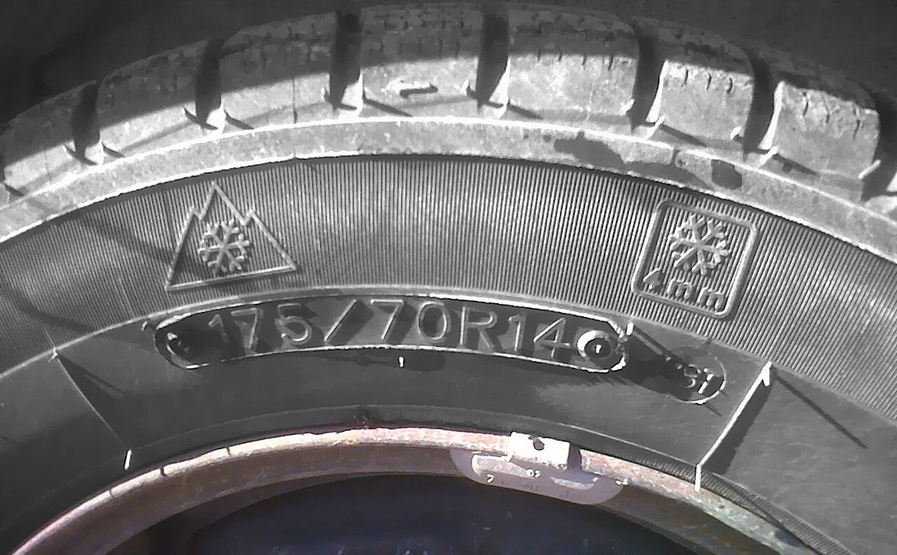

[ 01 / GUMISZERVIZ ]
Gumiklinika.
Gumicsere, centrírozás, defektjavítás. Egy cím a Liszt Ferenc utcán, ahol a négy kerék egy műszak alatt, ellenőrizve kerül vissza az autóra.
- Hétfő–péntek
- 08:00–17:00
- Szombat
- 08:00–12:00
- Értékelés
- 4,8 / 26
Minta nyitvatartás · a valós időpontért hívd a műhelyt.

Specimen / 01 Téli üzemmód Futófelület / minta 205 / 55 R16Munkák / árak
Szolgáltatások
Mintaárlista. A végösszeg a helyszíni állapotfelmérés után alakul ki. Az árak forintban értendők.
Gumicsere
Négy kerék le- és felszerelése, nyomatékellenőrzés.
Centrírozás
Négy kerék kiegyensúlyozása, súlyozás.
Defektjavítás
Sérülés vizsgálata, javítás, tömítés.
Szelepcsere
Szelephiba javítása, új szelep beépítése.
Gumitárolás
Tisztítás, jelölés, száraz tárolás szezon között.
Állapotfelmérés
Profilmélység, oldalfal, nyomás, egyenletes kopás.

[ Műhely / Gyula ]
Négy kerék.
Egy műszak.
Nem csak lecseréljük a garnitúrát: megnézzük a profilmélységet, az oldalfalat, a nyomást és a kopás egyenletességét. Utána nyomatékra húzzuk, és elmondjuk, mit érdemes figyelni a következő szezonig.
- 01
Egyeztetés
Telefonon vagy a munkalapon.
- 02
Felmérés
Profil, oldalfal, nyomás.
- 03
Munka
Csere, centrírozás, nyomaték.
- 04
Átadás
Ellenőrzés és tanács.
Mérés / döntés
Profilmérő
Állítsd be a mért profilmélységet, és válaszd ki az évszakot. Tájékoztató becslés – a tényleges állapotot a műhelyben ellenőrizzük.
Mért profilmélység
Téli üzemmódra is elegendő profilmélység.
Jogi minimum 1,6 mm. Téli guminál 4 mm alatt cserét javaslunk. A mérés nem helyettesíti a szakmai vizsgálatot.

3PMSF M+S 175/70 R14Munkalap / időpont
Időpontkérés
Ez egy demó munkalap: az adatok nem kerülnek továbbításra. A valós időpontot telefonon egyeztesd.
Munkalap rögzítve / demó
GK-—
Ez a demó itt véget ér – valódi időpont nem került lefoglalásra.
- Szolgáltatás
- —
- Időpont
- —
- Gumiméret
- —
- Becsült ár
- —
Telephely / nyitvatartás
Kapcsolat
A cím és a telefonszám nyilvános listákból származik. A nyitvatartás mintaadat – telefonon egyeztesd.
Telephely
Gumiklinika Bt.
5700 GyulaLiszt Ferenc utca 4. +36 30 955 3153
- Hétfő
- 08:00–17:00
- Kedd
- 08:00–17:00
- Szerda
- 08:00–17:00
- Csütörtök
- 08:00–17:00
- Péntek
- 08:00–17:00
- Szombat
- 08:00–12:00
- Vasárnap
- zárva